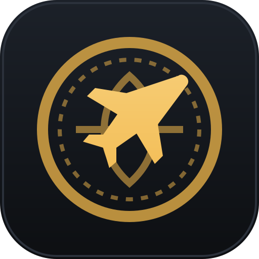

Your own Wi-Fi, everywhere. Apps that fly offline.
AirplaneMode turns a small router into a private hotspot. It signs in to the hotel Wi-Fi once for every device, reconnects by itself, and runs games, tools and a small language model with no internet at all.
Early days. Everything is tested against real OpenWrt in Docker; the first hardware is on its way.


Built for hotels, airports and planes
Everything runs on the box. Your devices join one network you own, and the box deals with the rest.
One sign-in for everyone
One person accepts the hotel's terms page and every phone, laptop and tablet is online. No paying per device.
Reconnects by itself
Remembers networks and rejoins them. Plug in the room's Ethernet cable and it's used first.
Apps with no internet
Card games with friends on the hotspot, travel trivia, text adventures, films, file sharing, an offline Wikivoyage, and a language model built into the box.
Your home VPN
Paste a WireGuard config and everything goes through it. The hotel only sees encrypted traffic.
Devices and data use
See who's connected and how much data each network used. Pause the tablet streaming all night.
Least privilege
The admin panel controls the router through a login limited to Wi-Fi settings. Never root.
From box to hotspot in about half an hour
Pick your router. Tick the steps off as you go: this page remembers where you are.
-
Get the parts
NanoPi R6S, 8 GB The box. Get the metal case: it's the heatsink. 2 × USB Wi-Fi adapter The R6S has no Wi-Fi. MediaTek only: e.g. ALFA AWUS036ACM (MT7612U) for the hotspot, AWUS036ACHM (MT7610U) for the hotel network. 5 V / 3 A USB-C power Or a USB-C PD power bank. microSD card, 8 GB+ Only for flashing, once. Short USB extension Optional. Keeps one adapter away from the case. -
Flash FriendlyWrt to the eMMC
FriendlyWrt is FriendlyElec's OpenWrt, with Docker built in.
- Open FriendlyElec's download page →
01_Official images→02_SD-to-eMMC images, and download the file named likerk3588-eflasher-friendlywrt-…-docker-….img.gz. Pick the one withdockerin its name. - Write it to the microSD card with balenaEtcher (it takes the
.gzdirectly). On Windows, FriendlyElec's own tool is Win32 Disk Imager: unzip the image first. - Put the card in the R6S and power it on. It installs to the eMMC by itself. Watch the red SYS light:
fast blinkinstalling, takes a few minutes slow + greendone: SYS blinks slowly and the WAN/LAN lights stay on- Unplug the power, take the card out, and power on again. It now boots from the eMMC.
- Open FriendlyElec's download page →
-
Sign in once and get it online
- Plug your laptop into the port marked LAN, and a cable from your home router into the port marked WAN.
- Open http://192.168.2.1. Sign in as
rootwith the passwordpassword(on some versions, leave it empty). - Set your own root password: System → Administration. It stays yours; AirplaneMode gets its own, limited login.
-
Plug in the Wi-Fi adapters
Put the hotspot adapter (AWUS036ACM) in the blue USB 3.0 port and the other in the USB 2.0 port. In LuCI, Network → Wireless should now show two radios. No need to set them up: the admin panel does it.
-
Run the installer
Open a terminal (PowerShell on Windows, Terminal on a Mac), connect with
ssh root@192.168.2.1, then paste this. It checks the router, installs everything (about 3.8 GB), and prints your admin password at the end. -
Name your hotspot
Open http://airplane.mode:8080/admin/, sign in with the password the installer printed, and give your hotspot a name and password. Your devices remember it from then on, everywhere you go.
-
Check your model
You need an arm64 GL.iNet (for example Flint 2 / GL-MT6000) with 1 GB of RAM, plus a USB stick or SD card of 8 GB or more for Docker. Older MIPS models won't work.
-
Get online and open a shell
Connect the router to the internet in its admin panel (http://192.168.8.1). Then, from a terminal:
ssh root@192.168.8.1, using the admin panel's password. -
Install Docker
Mount your USB or SD storage (GL.iNet admin panel → Applications → Network Storage), then:
# opkg update && opkg install dockerd docker docker-composePoint Docker's data at the USB/SD storage (
data_rootin/etc/config/dockerd) and start it with/etc/init.d/dockerd restart. Package names can differ between firmware versions. -
Run the installer
Paste this into the same shell. It checks the router, installs everything, and prints your admin password at the end.
-
Name your hotspot, and pick one repeater
Open http://airplane.mode:8080/admin/ and sign in. GL.iNet has its own repeater page that also edits the upstream Wi-Fi, so use either it or AirplaneMode's Internet source panel, not both.
Things to do at 35,000 feet
Ten apps so far. Each is its own open source project and plugs in as a container.
The Dark Light
Text adventures narrated by the on-board model, alone or as a party from everyone's phones: a dark lighthouse, a frozen mountain pass and a fog-bound marsh.
Games · uses the model (not on GL.iNet)Gate Change
A fast colour-and-number card game for 2 to 8 players. Play friends on the hotspot from every phone, or bots.
GamesPassport
A travel deck-building card game. Collect stamps and visas against friends on the hotspot, or bots.
Games
Wayfarer
Travel trivia from the Travel Guide: capitals, currencies, airport codes, phrases. Daily flight, endless mode, high scores.
GamesDoom
The classic shooter, running on your device with touch controls. Freedoom, the Layover airport episode, or your own WADs from Drop.
GamesCinema
Watch the films and shows, and play the music, loaded onto Drop. Every device picks up where it left off.
EntertainmentQuickShot
An endless feed of the short videos in Drop's QuickShot folder. Swipe, like, comment.
EntertainmentThe Couch
A therapist simulator: talk things over with one of six therapists, from a gentle Empath to a playful Narcissist, played by the on-board model. Not real therapy.
Entertainment · uses the model (not on GL.iNet)Travel Guide
All of Wikivoyage, offline. Look up any destination, or ask a question and get an answer from the guide.
Travel · uses the model (not on GL.iNet)Drop
Send files and notes between every phone, tablet and laptop on the hotspot, and keep movies for the flight.
Tools